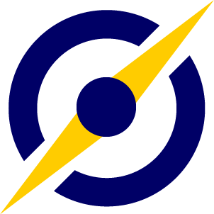

Logo
After finishing installing this application on the user’s device, users will be asked to create a new account by registering an email address followed by filling in the required information such as address, phone number, interest, and entering identification (passport, id) for security reasons. After completing the personal data, the user can now choose whether he wants to join and become a local tour guide for the application or seek a tour guide in any particular area. For people who want to become local tour guides, they will have to submit more data like a photo, description about themselves, location they want to work, and their rate. On the other hand, people who look for a tour guide can directly jump in to the map page and search for a specific area that they want to explore. Afterwards, a list of tour guide in the area will come out complete with their hobby, interest and details of the schedule about the places they will visit and also the estimated time of the tour and the price (individual/groups), and after both parties agree, meeting point and time will come out and the arrival time of the tour guide will be more early. For the tourist end, users will have to launch the app and grant location access to the app so the application can locate their current location and provide the most relevant tour plan, accommodation. For the accommodation part, the app will collect open source accommodation data such as Hotel Druid, KWHotel Free and more. Moreover, the application also allows people who want to rent their hotel or house, they will need to upload their accommodation location, house or room size, amenities provided and most importantly the costs.
As for the tour plan, we will use an open source plan such as a tour guide from a national tour guide and plan provided from users. This allows the app to update with the latest tour plan as certain tourist attractions will be remodelled or closed. Furthermore, another feature will be added along with the tour plan is the duration for each visit. As this app is mainly used for short-term travel, travel must be planned carefully, otherwise users will waste a lot of time.
In some conditions or some location, it is possible that the track is quite extreme or require special tools and equipment to be able to pass the route and ensure the safety of all travellers, therefore this application also provides some equipment that must be brought during the exploration and these tools and equipment can be rented by travellers with an affordable price. Examples of items that are needed in some conditions are boots to protect travellers feet on muddy and slippery terrain, another thing is a flashlight for exploring places at night time or dark places like caves, and even safety straps for exploration on high and steep places. In addition to the mandatory equipment, this application also provides additional and optional items for explorers to purchase or rent such as umbrellas, gloves, sunscreen, etc.
For tours located within the city and the surrounding route are relatively safe and do not require any special tools or equipment, this application still provides several tools for the elderly, babies, and people with disabilities by providing wheelchairs and strollers so that everyone can enjoy this tour. Additional or optional items above can also still be purchased for the city tour with an additional item that is pocket wifi that can only be available for rent in the city tour, considering the signal outside the city is usually bad and in some worst case it cannot even be accessed.
Finally, after the tour is finished, users are able to browse tour plans provided by other users and are also able to provide their opinion on them. Employing the use of a star and review rating, users can rate the tour plan up to 5 stars in increments of 0.5 stars which will be averaged when displaying the overall rating of the plan to other users. The individual’s review will only be displayed when opening the specific plan to see more details. These reviews can be sorted by rating if the browsing users prefer to see higher or lower ratings first. Another feature that is provided is reviews with pictures. Users will be able to attach pictures with their reviews, this way, they can provide an in-depth review with context which can be used as reference or give a more realistic view to prospecting customers. The review section may include a filter option to only show those who attached pictures with their review. To reduce resource usage, the uploaded pictures may be automatically compressed and/or restricted to be below a specific size.
Last but not least, users need to be able to keep this profile incognito for privacy reasons. Some people would like to browse the tour guide app without their information being tracked or left behind. Therefore it is a good idea to reassure the users to have an offline or incognito mode such as google chrome. Open source meaning that the app needs to not compromise users details such as their name, date of birth, address, phone number and credit card details. However if a user wanted to leave feedback behind, it would need to be validated to ensure that all reviews are authenticated and real but also at the same time, travel companies would not be able to say it is defamation.
These are the main features in this application:
Preparing for a trip sometimes can become so complicated for people because there are so many things to plan and prepare, and for that reason we create this project. This project is about our group development of a mobile tour application that will focus on providing people who want to travel to different places whether it is a famous place or a remote one, and seeking for a local tour guide to help them explore the place quickly, easily and safely. We also added several features in this application, that help users to prepare all of the things needed for their trips to make them more convenient.
We hope by creating this application, many people who are looking to go on a trip and seeking for tour guide service can be helped, and those who are looking for work in the tourism sector, more specifically as a tour guide can get a job. Furthermore, we also expect that this application can be more widely known and downloaded by users, because the more users that use this app it will help boost the ecosystem of this application. Besides that, we hope that through this application it can help connect a lot of people both between users and tour guides as well as fellow travellers.
Our motivation for this project is to help tourists to find a local tour guide easily with an affordable price through our application. During the pandemic that is getting better and under control, a lot of countries are starting to reopen the entry access for tourists to their country. This is a really good opportunity to make an application like this because it can help overcome the unemployment problem in the country, especially because a lot of countries are still in the recovery phase from the pandemic, thus helping the economy of the country. This application can also be helpful for people who want to travel again, because they are able to discover more places that are difficult to reach and also get provided with a local tour guide who is well acquainted with the place they are visiting.
The similar popular systems/products available which are also engaged in tourism services are Airbnb, TripIt, Hopper, Traveloka, and google maps. However, most of this application only offers specific services such as aeroplane ticket booking, hotel booking, and tour planning that are mostly only in popular spots. This is different from the project that we do because our apps reach areas that are remote and less known to people, and also a significant difference is that this application includes local tour guides services in the order. Moreover, this application also provides items that are needed, both mandatory and optional for the tour. Whereas other applications do not have this feature, so users have to prepare all the stuff individually. Overall, many applications offer some part of the services available in this application, but so far there is no application that has the full features of this project we are working on.
The aim of this project is to introduce this application to users and explain its advantages over other applications so that more people are interested and start using this application to help them prepare for their trip. And we also hope that by creating this application, we can help local people to get a job and open up opportunities through connecting them with new people. Additionally, we aim that through this project more remote areas are developing with the advent of tourism access. Therefore, to achieve all of this a good marketing strategy will be very useful in the early stages of launching this project to attract users attention and gaining a new market in the mobile travel application.
The project goals for this project is to keep connecting both parties whether it's the users who are seeking a local tour guide in a specific area or the tour guide that is looking for customers. Moreover, we want to be a marketplace that is reputable and trustworthy to users by keeping on developing features to make it easier for users and improve the safety aspect during the tour. We also hope that through the rating and feedback feature on the application we can use those responses from users to fix deficiencies that can still be improved. By doing this, we hope that this application will be a sustainable app in the long-term.
Week 1
During a meeting we went through the assignment specifications to achieve a better understanding of the assignment and plan for what we should do for each segment within. We noted things we were unsure about so we could later discuss it with the tutor. For the report we made notes underneath the headings to clarify what is needed for it to help us when we were unsure on what we were supposed to do for that task or what can help with presenting it. We also completed wireframes to show a basic design on how the app would look. As it was a wireframe, not much effort was put into making it look pretty instead focusing on where things should be placed and getting the functionality visualised. When designing the star rating inspiration was taken from Newgrounds’ 6 star review system with the first black star denoting a 0 star rating.
Week 2
Before starting the mockup we played around with and did research on InVision. We concluded that it would be better for us to continue using Figma as our tool of choice as there were complications that we found with InVision. Mainly, the tutorial videos we found mostly consisted of importing an existing mockup from sketch into InVision for prototyping instead of designing a mockup. In addition to this we could not resize frames and pixels to the pixel which would hinder our ability to consistently design shapes for the mockup. Thus, we went back to Figma. For the mockup we started by implementing the basic design from the wireframes alongside doing research on what colours we’d use. We decided to use a blue, yellow and white colour scheme limiting it to these colours so as to not pollute it with too much colour. When going over the design we also researched mobile design standards for margins and implemented 16 pixel margins to comply with this. We found that using design standards would allow for a better user experience. A logo was designed in Adobe Illustrator with a compass being the inspiration behind the design. Relearning Illustrator took a bit of time but the result was a simple compass that would fit the theme of the app. The colours used for the app were from the colour palette determined earlier. The files for the html and css were created with only headings and tables with no styling.
We also did some research in the job position that is required for our mobile application. We are unable to find a very specific job position that is required but we managed to come up with four different jobs which might be the most significant for at the start of the company and developing the application. We refer to job advertisements websites such as Seek, Indeed, Jora Jobs and some websites that provide suggested jobs positions that are relevant to us.
As for the GitHub Pages, we started making the basis for the design. We opted for a simple design to make it easier to insert our reports and data to the GitHub Pages while still looking modern and very functional.
Week 3
At first the mockup was worked on individually without much interaction with each other. The only comments at the time were on teams or comments within the mockup itself. Later during the week we got in a group call for better communication and to bounce ideas off each other. This enabled us to work more efficiently and we were able to actively apply received feedback to change design elements and streamline functionality. After finding nothing to add to the mockup the prototype was created to show how the app would be navigated. Prototyping was found to be simple as it consisted of selecting the component and what action would happen when it was interacted with. User tests were conducted to see how a user with only basic knowledge of what the app is would be able to navigate through the app and what they think of it. Ideally the mockup and prototype would have been completed much earlier than they were so testing could have been done earlier and allow for more feedback and criticism to be implemented. After completing the prototype it would have been ideal to start on developing the app.
During the last few meetings we agreed to the job scopes that are in the google docs and we published four job advertisements flyers using Canva. We have tried multiple tools to create a job advertisement such as Microsoft PowerPoint, Word, online templates, Paint but none of the tools seems to produce the jobs advertisements that we desired. Thus we came to the conclusion Canva is the one we used as the jobs advertisement produced is clean and contains most of the information needed for example: Company names, jobs position, required skills and contact information.
We started inserting much of the report to the HTML files of the GitHub Pages, starting from the Team Profile or About Us section, which contain individual profiles and personality test tables, and then we start to insert other sections such as projects, which contain description, motives, timeframe, plans and progress, etc.
Worked on designing and prototyping the app and research
Worked on designing the app and research
Worked on the HTML and CSS and feedback on the design and research
Research
Research
Roles were not defined although individual tasks were assigned or claimed by the week during meetings. Most of the tasks were listed each week with people claiming a task they want to work on in addition to tasks we all needed to complete.
The application is designed to provide tourists a platform to easily access most of the tour guides provided.
Scopes:
Limits:
For designing this project a tool will be required for designing how the app looks and its functionality. For this we chose Figma due to the amount of control we have over what we create, ease of collaboration, and how easy it is to learn. As this product can be used in browsers we wouldn’t need any additional hardware or licences. The only one with prior experience using Figma was Timothy which he has used previously in other subjects. Though he had to relearn how to use the tools and only remembered the basics. In order to design the logo Adobe Illustrator was used which was free software as a student of RMIT. Timothy has had prior experience with this app but had to relearn everything as he last used it in highschool for only a brief period of time.For designing job advertisements, Zen Jet used a free online designing tool called Canva. Canva allows us to create our own job advertisement flyers without using any money.
User testing was conducted for this project to gather user feedback and to observe how they navigated through the app. An overview of the app and its function was given to the users before conducting the testing so that they can know what to expect from it. The testing was conducted on family members as they were the easiest people to access immediate feedback and observation of habits and navigation.The only knowledge users need are what was provided about the app in addition to basic knowledge on mobile apps.
Feedback received from the users include:
Observations include:
| Name | Timothy | Yew | Reza | Fernando | Brian |
|---|---|---|---|---|---|
| Week 1 |
|
|
Research on:
|
Research on:
|
Research on the risks and testing. What constraints are caused by it.. |
| Week 2 |
|
Compile most html & css coding for the website |
Research on what a web developer does, the scope of the work, etc. |
Research about the software engineer job, what they do, and their daily routine at work. |
Research aims of the project, what targets is the project aimed at, who would use it |
| Week 3 |
|
Worked on Scopes and limits |
|
Worked on the motivation and did some research about the landscape, specifically about similar companies / applications. |
Continued to work on the tools and technologies |
| Week 4 |
|
Research on possible skills required for job advertisement. . |
Continuing work on Github Pages, starting work on group reflections and career plans. |
Working on the landscape, topic overview, and career plans. |
Research on the landscape |
| Week 5 |
|
|
|
|
Continue working on career plans, reflections |
| Week | Progress Target |
|---|---|
| 6 | Design database schema Start developing app with page navigation |
| 7 | Implement login and register Implement database |
| 8 | Implement search and sort Implement writing reviews |
| 9 | Implement anonymous browsing: limiting functionality from what would require a user account |
| 10 | Implement change of details Implement profile functionality such as profile picture and description |
| 11 | Implement application for tour partnership Implement flagging reviews and tours |
| 12 | Implement admin functionality |
| 13 | Implement booking |
| 14 | Implement security |
| 15 | Implement map search option Integrate Google Maps API |
| 16 | Implement multi language support |
Lack of experience
We have very minimal experience developing a mobile app as for most of us it is our first year of university and this is our first time trying anything similar to this. Learning to build this app takes a lot of knowledge in using javascript which requires time however due to the time constraint of this course we are limited to learning on the job. We have had to devote a lot of time towards learning the tools required to deliver artefacts to a sufficient standard.
Scheduling issues
As this is a large group of five students, we have found it very difficult to find times where we can meet up. As we have other commitments to attend to, whether it be other subjects, work or something else, we have only been able to have one meeting each week which is not a lot of time engaged in group discussions, however this is not something that we can avoid.
Unforeseen events
There is a possibility that something unpredictable occurs hindering the group or individuals from being able to work on this project. For example, last year Tim’s laptop’s fans stopped and powered off the laptop. He was then unable to power it on and had to send it to Lenovo to get it fixed. This had its own complications as there wasn’t sufficient communication on Lenovo’s end regarding troubleshooting and communication. During this time there weren’t any other computers he could use and thus could not contribute to the development of projects nor work on his own.
Tools being difficult to learn/unsuitable for use
We encountered a hurdle when deciding which software to use for designing the application where there were many tools available but some were found to be not friendly enough for us to use. We considered proto.io but found that we wouldn’t be able to collaborate with it for free. We tried to use InVision but we found that it was too difficult to learn and required use of other apps in order to use it properly as it mostly focuses on prototyping. We eventually decided on using Figma for all of it due to the level of control we have and its ease of use in comparison to its competitors; however, some of us still found it difficult to learn how to use.
Work ethic
As demonstrated in our previous assignment, we did the majority of the work in the later weeks of the assignment. It is possible that this may happen again if people procrastinate working on this assignment. This would result in us delivering a lower quality product in addition to not being able to deliver as much as we’d like.
Our team communicates mainly using Microsoft Teams to share opinions, asking questions, and work updates. We also organise a meeting at least once a week to share our progress and for feedback and planning sessions, ideally we do these meetings twice a week or more but due to difficult scheduling conflicts it’s quite challenging to do.
We also gather on IT Tutorial sessions every wednesday to get feedbacks with the teacher and other group members in real time.